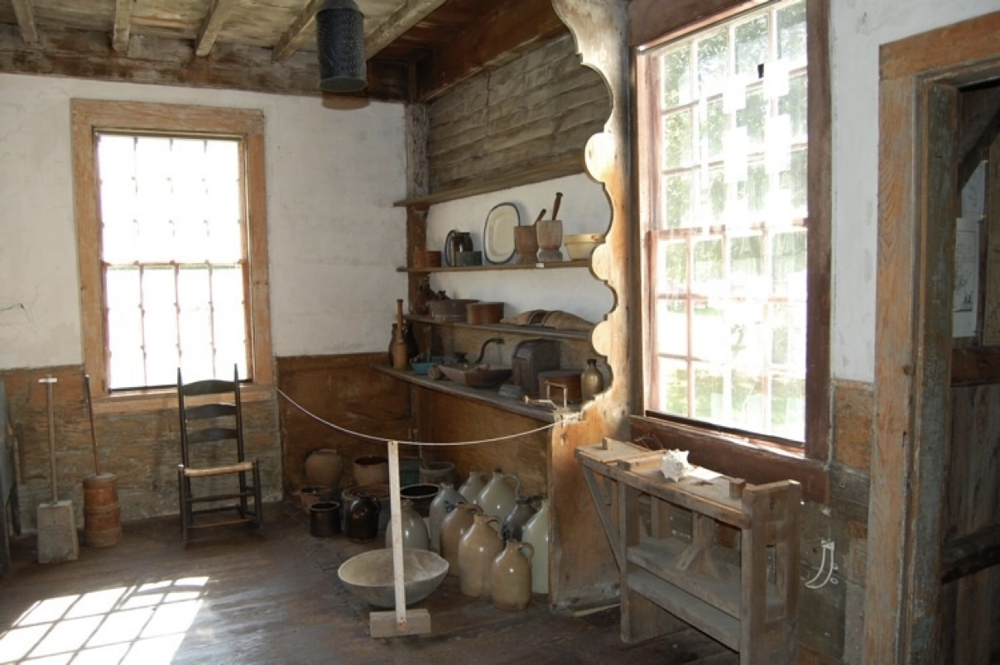
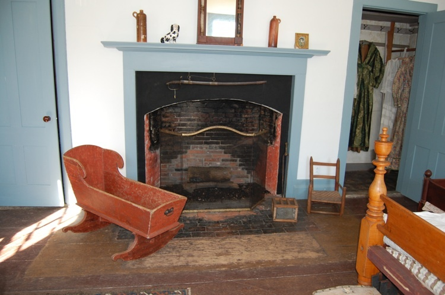
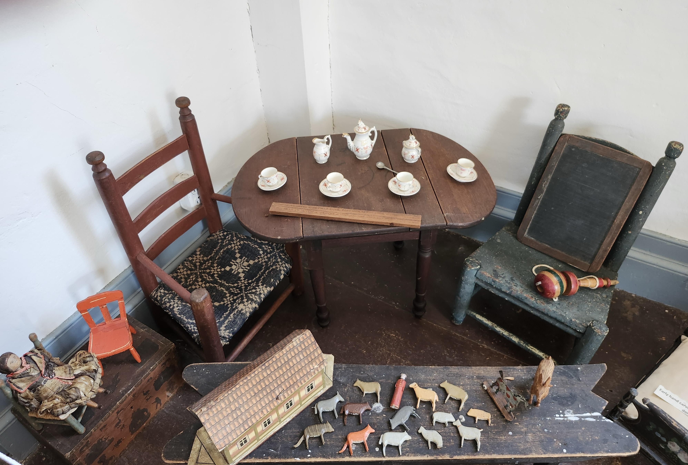

From Artifact to Experience
A method for evidence-based historical visualization using AI to interpret artifacts through lived experience.
A set of 19th-century samplers discovered at auction led to a 200-year family story. Through research, collaboration with historians and textile experts, and careful interpretation, these artifacts became the foundation for a novel, illustrations, and classroom resources designed to help audiences connect with the past.
This project uses AI not to invent images, but to test and refine scenes against real historical evidence.
In this way, AI becomes a tool for historical interpretation rather than illustration.
The Discovery
In 2020, while searching for a gift, a collection of early American samplers were spotted at an auction in Oakland, California. What first stood out as Philadelphia and Maine needleworks quickly revealed something more: multiple samplers stitched by members of the same extended family.
Genealogical research connected these pieces to the Prescott family of Dresden, Maine, and, through the Canby family, to the family of Betsy Ross, linking the samplers to documented individuals, places, and a broader early American context.
The samplers were ultimately returned to the Pownalborough Court House, where they had been stitched, completing a journey of nearly two centuries.
What began as a search for an object became a story, one rooted in real people, places, and lives.

The Challenge
Early attempts at illustration quickly revealed a problem: small inaccuracies broke the connection to the story.
“That’s not Louisa.”
“Those buttons are wrong.”
“The courthouse isn’t right.”
Each correction led to deeper research. Clothing, architecture, materials, and even family background had to align with historical evidence. Accuracy was not optional, it was essential to maintaining trust with the reader.
Clothing presented a particular challenge. Many surviving garments are too fragile to be worn, leaving questions of fit, movement, and how fabric would have draped on a living person.
AI made it possible to explore these details, allowing garments to be seen in motion and at scale, revealing structure, stitching, and proportion in ways not practical through traditional illustration alone.

The Process
Each scene begins with a moment from the story, reduced to its essentials: the people present, the setting, the objects, the light, and the emotional tone.
These scenes are guided by documented evidence, including surviving artifacts, historical clothing, architectural details, and contemporary accounts.
Visual tools, including AI, are used within these constraints to iteratively test variations, refine details, and evaluate historical plausibility under human direction.
The goal is informed interpretation grounded in evidence.
{kind=link}

View the Historic Reimagining of the kitchen
From Evidence to Image
Each illustration was constructed through a chain of reference, tested, corrected, and refined.
These reference materials guide interpretation rather than serve as direct reproductions.
.jpg)


{kind=link}


Sallie Prescott
As with Beckie, Sallie’s appearance and clothing were guided by her surviving portrait, photographs, and documented period garments, adapted to reflect her age and role within the family.
Sallie’s scenes shift the focus from object to lived experience, showing how the same methods extend beyond artifacts into daily life.


Reconstructing a Historical Figure
This approach extends beyond individual figures to more complex reconstructions involving multiple sources.
Not all references came from a single source. In some cases, multiple pieces, a portrait, surviving furniture, and architectural spaces, were brought together to reconstruct a moment grounded in real objects and environments.


From Object to Experience
This method also applies to objects, connecting preserved artifacts to the lived experiences they once supported.
Not every object tells its story on its own. Some require interpretation, connecting a surviving artifact to how it might have been used in daily life.
A sled preserves its form, but not the moment. AI makes it possible to explore that missing human connection, helping visualize how such objects may have been used nearly two centuries ago.


Visualizing a Question
Historical objects do not always tell us how they were used together. They leave behind clues, not complete scenes.
{kind=link}



AI made it possible to iteratively construct and refine historically grounded scenes, allowing each detail to be tested against real evidence in ways not practical through traditional illustration alone.
Used in this way, AI becomes a tool for exploration rather than invention, helping ask what could have been, and more importantly, why.
Each object connects to documented behavior: education, play, and moral instruction. The image is not an answer, but an invitation to ask better questions.
We do not recreate the past. We listen carefully, and imagine responsibly.
From Research to Experience
The work expanded beyond a single story into a broader experience:
- A historical novel inspired by real lives
- An audiobook bringing the narrative to life
- Illustrations grounded in historical evidence
- Teacher resources for classroom use
- Presentations at historical institutions
- A published article about the discovery and return of the samplers in PieceWork Magazine (Spring 2026)
Together, these elements help bridge the gap between objects and lived experience, allowing modern audiences to connect with the past in meaningful ways.

Why This Matters
Historical objects tell us what survives. Interpretation helps us understand how people may have lived with them.
These images and stories are not claims of fact, but invitations to look more closely, to ask better questions, and to engage with the past in a thoughtful way.
The goal is not certainty, but understanding.
Image & Research Credits
Selected images draw upon garments in the Historic Textile & Costume Collection at the University of Rhode Island. Background interiors from the Pownalborough Court House are courtesy of the Lincoln County Historical Association.